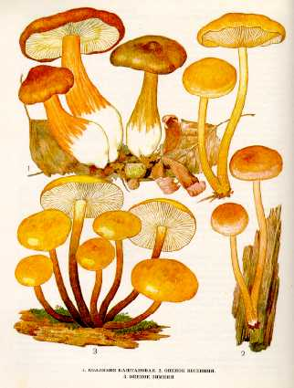

1. КОЛЛИБИЯ КАШТАНОВАЯ.
Растет в хвойных и лиственных лесах, на пастбищах
в июле - сентябре, часто большими группами. Широко распространенный гриб.
Шляпка 4—8 см в диаметре, мясистая, сначала выпуклая,
затем распростертая, каштановая или коричневая, в центре более темная, выцветающая,
по краю ребристая. Мякоть водянистая, мягкая, бледно-бурая с красноватым оттенком,
без особого вкуса и запаха.
Пластинки сначала приросшие к ножке, затем свободные, тонкие, белые
или желтоватые, с неровным зубчатым краем. Споровый порошок белый. Споры эллипсоидные,
гладкие.
Ножка 4—9 см длины, 1 —
Малоизвестный съедобный гриб, вкусовые качества средние. Употребляется
свежим, соленым и маринованным.
2. ОПЕНОК ВЕСЕННИЙ. КОЛЛИБИЯ ДУБОЛЮБИВАЯ.
Встречается часто во влажных хвойных и лиственных лесах. Появляется большими группами с мая по октябрь.
Шляпка 2-
Ножка 2-
Гриб съедобен. Употребляется вареный
3. ОПЕНОК ЗИМНИЙ. ЗИМНИЙ ГРИБ.
Селится большими группами на отмирающих деревьях
и пнях различных лиственных пород, чаще всего вяза, ильма, реже ивы, тополя, осины,
липы, обычно поздно осенью — в конце сентября или в начале октября, когда понижается
температура и увеличивается влажность воздуха. Массовое развитие зимнего опенка
длится и после выпадения снега, до устойчивых морозов. Замерзшие грибы в период
оттепелей и ранней весной оттаи-вают
и продолжают свое развитие, образуя жизнеспособные споры.
Шляпка небольшая — от 2 до10
см в диаметре, у молодого гриба бывает плосковыпуклая, у зрелого — почти плоская,
медово-желтого цвета, в центре более темная, с подпалинами, тонкомясистая,
голая, гладкая, влажная, слизистая, клейкая, при подсыхании
блестящая. Мякоть желтоватая или кремовая,
слегка водянистая, с приятным вкусом и запахом.
Пластинки у молодых грибов светло-желтые или кремовые,
у старых — темнеющие, довольно редкие, широкие, слегка
приросшие к ножке. Споровый порошок белый. Споры цилиндрические, овальные, гладкие.
Ножка от 3 до
Малоизвестный съедобный гриб четвертой категории. Обладает высокими
вкусовыми качествами. В пищу употребляются шляпки и верхние части ножек молодых
грибов свежими, солеными и маринованными, пригодны для
сушки. Гриб хорошо плодоносит в культуре.
Опенок зимний можно спутать с ядовитым грибом ложноопенком серно-желтым!!!